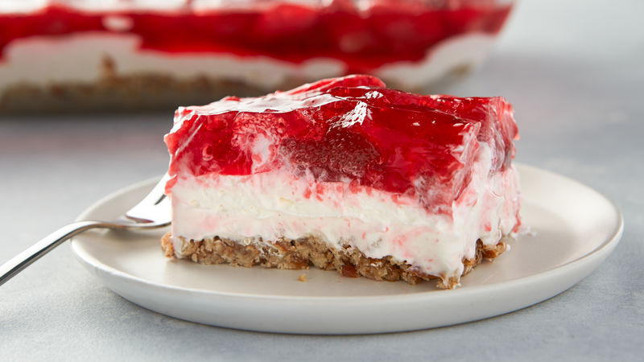

Strawberry pretzel salad
Home

The irresistible blend of creamy, crunchy, sweet and salty makes it a hit for any season and occasion!
This phenomenal berry dish is a great option if you need a sweet treat and your oven is already full of tasty dishes
Ingredients
Topping
- 2 packages (4-serving size each) Jell-O® strawberry-flavored gelatin
- 2 cups boiling water
- 2 boxes (16 oz each) frozen sweetened strawberries, thawed
Crust
- 2 cups pretzels, crushed
- 3/4 cup butter, melted
- 3 tablespoons sugar
Filling
- 1 container (8 oz) Cool Whip frozen whipped topping, thawed
- 1 package (8 oz) cream cheese, softened
- 1 cup sugar
Steps
-
Dissolve gelatin in boiling water. Stir in strawberries; refrigerate until partially set, about 1 hour 45 minutes.
-
Heat oven to 350° F. In medium bowl, mix Crust ingredients. Press into ungreased 13 x 9-inch baking dish. Bake 10 minutes. Cool on cooling rack.
-
In medium bowl, beat Filling ingredients with electric mixer on medium speed until smooth. Spread over cooled crust. Cover and refrigerate until cool and gelatin topping in bowl is partially set.
-
Carefully spoon gelatin topping over filling. Refrigerate 4 to 6 hours or until firm. To serve, cut into 4 rows by 3 rows.